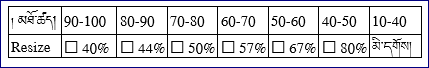

| དཀར་ཆག | |---------| ༡༽ དྲ་སྤེལ་པར་སྣོད་གྲ་སྒྲིག་དང་བརྒྱ་ཆ་འཕྲི་ཐབས། |༢༽ མཚོན་མདོག་ཅན་རྐྱང་བ། |༣༽ དཀར་ནག་ཅན་རྐྱང་པ། |༤༽ ཚོན་ལྡན་དང་དཀར་ནག་འདྲེས་མ།
📂source 🡲 པར་སྣོད་གསར་བ་གཅིག་བཟོས་ནས་མིང་imagesཐོགས། 🡲 📂archive 🡲 པར་དཀྱུས་མ་ཞིག་གི་སྟེང་དུ་གཉིས་རྡེབས་བྱོས། 🡲 1:1སྟེང་ནོན། 🡲 ཚེག་མཐོ་ཚད་འཇལ། 🡲 archiveའདེམས།🡲 ཙི་ཙི་གཡས་ནོན་བྱོས། 🡲 批量转换འདེམས། 🡲 动作འདེམས། 🡲 添加动作འདེམས། 🡲 图像འདེམས། 🡲 调整大小 🡲 百分比 🡲 宽度/高度(ཚེག་གི་མཐོ་ཚད་དང་བརྒྱ་ཆ་འཕྲི་ཐབས་ཀྱི་རེའུ་མིག་ལ་གཟིགས།) 🡲 保特比例 🡲 输出 🡲 文件夹 🡲 C:\Users......\imagesའདེམས། 🡲 文件名 🡲{filename} 🡲 格式 🡲 和原文件一样 🡲 当输出文件已经存在时 🡲 重命名འདེམས། 🡲 保特文件结构ལ་རྟགས་རྒྱོབས། 🡲 保留上级目录(པོད་གཅིག་ཅན་ཡིན་ན་འདི་ལ་རྟགས་རྒྱོབས། དེ་མིན་རྟགས་རྒྱགས་མི་དགོས།) 🡲 保留元数据 ལ་རྟགས་རྒྱོབས། 🡲 Use CPU Coresལ་རྟགས་རྒྱབ་ནས་ 🡲 མཐོ་ཤོས་དེ་འདེམས། 🡲 转挨ནོན། 🡲 OKནོན།
གཤམ་གྱི་འགུལ་རིས་ནང་དུ་གསལ་བ་བཞིན་ཐོག་དང་པོར་མཁོ་སྒྲུབ་ཨང་ཅན་གྱི་པར་སྣོད་ནང་དུ་ཡིག་སྣོད་གསར་བ་ཞིག་བཟོས་ནས་imagesའདོགས་དགོས། དེ་རྗེས་ཉར་ཚགས་པར་སྣོད་(archive)ནང་གི་པར་དཀྱུས་མ་ཞིག་ཁ་ཕྱེ་ནས་ཚེག་གི་མཐོ་དམའ་ཚད་མཇལ། དེ་ནས་ཚེག་གི་མཐོ་དམའ་དང་བརྒྱ་ཆའི་རེའུ་མིག་ལ་བལྟས་ནས་བརྒྱ་ཆ་ག་ཚོད་འཕྲི་དགོས་མིན་ལ་བལྟ་དགོས།
པར་རིས་གང་རུང་ཞིག་ཡིན་རུང་ཚེག་གི་མཐོ་ཚད་པིག་སེལ་40ཚད་ལྡན་དུ་ངོས་འཛིན་བྱེད། གལ་སྲིད་ཚེག་གི་མཐོ་ཚད་པིག་སེལ་བཞི་བཅུ་ལས་ཆེ་བ་ཡོད་ན་ཆུང་རུ་གཏོང་དགོས། དེ་མིན་ཚེག་གི་མཐོ་ཚད་པིག་སེལ་བཞི་བཅུ་ལས་ཆུང་བ་ཡོད་ན་བརྒྱ་ཆ་འཕྲི་མི་དགོས།

archive ཡིག་སྣོད་ 批量转换 ཁ་ཕྱེ་ནས་སྒྲིག་འགོད་ནང་དུ་བརྒྱ་ཆ་འཕྲི་ཐབས་རེའུ་མིག་ནང་འཁེལ་ཡོད་པའི་ཨང་འབྲི་དགོས།
འདིར་ཡིག་ཆའི་རྣམ་སྒྲིག་རང་འཇག་དང་། དྲ་སྤེལ་ཡིག་སྣོད་(images)འདེམས་དགོས། དེ་བཞིན་སྒྲིག་འགོད་གཞན་ཁག་སྒྲིག་རྗེས་བསྒྱུར་དགོས།
📂imagesའདེམས། 🡲 ཙི་ཙི་གཡས་ནོན་བྱོས། 🡲 批量转换འདེམས། 🡲 动作(0/0) 🡲 输出སྟེང་ནོན། 🡲 原文件夹འདེམས། 🡲 文件名 🡲{filename} 🡲 格式 🡲 JPG-JPEG/JFIFའདེམས། 🡲 设置སྟེང་ནོན། 🡲 质量 🡲 80བཟོས། 🡲 浙进རྟགས་རྒྱོབ། 🡲 OKནོན། 🡲 当输出文件已经存在时 🡲 重命名འདེམས། 🡲 保特文件结构ལ་རྟགས་རྒྱོབས། 🡲 保留上级目录(པོད་གཅིག་ཅན་ཡིན་ན་འདི་ལ་རྟགས་རྒྱོབས། དེ་མིན་རྟགས་རྒྱགས་མི་དགོས།) 🡲 保留元数据ལ་རྟགས་རྒྱོབས། 🡲 Use CPU Coresལ་རྟགས་རྒྱབ་ནས་མཐོ་ཤོས་དེ་འདེམས། 🡲 转挨ནོན། 🡲 OKནོན།
དྲ་སྤེལ་པར་སྣོད་ནང་དུ་ཡོད་པའི་པོད་རེ་རེ་བཞིན་མཉེན་ཆས་ཀྱི་批量转换ནང་ཁ་ཕྱེ་ནས་བསྒྱུར་དགོས། འདིར་ངེས་དགོས་བ་ཞིག་ལ་动作(0/0)ནང་དུ་སྒྲིག་འགོད་གཅིག་ཀྱང་ཡོད་མི་ཆོག པར་གྱི་རྣམ་སྒྲིག་JPG-JPEG/JFIFདང་། དེའི་སྒྲིག་འགོད་ནང་རྣམ་སྒྲིག་ཚགས་བསྡུས་བརྒྱད་ཅུ་དང། 浙进ལ་རྟགས་རྒྱགས་དགོས།
📂imagesའདེམས། 🡲 ཙི་ཙི་གཡས་ནོན་བྱོས། 🡲 批量转换འདེམས། 🡲 添加动作འདེམས། 🡲 图像འདེམས། 🡲 改变颜色འདེམས། 🡲 二进制རྟགས་རྒྱོབ། 🡲 抖动 🡲 没有འདེམས། 🡲 输出སྟེང་ནོན། 🡲 原文件夹འདེམས། 🡲 文件名 🡲{filename} 🡲 格式 🡲 TIF - TIFF Revision 6འདེམས། 🡲 设置སྟེང་ནོན། 🡲 黑白图像压缩(B&W) 🡲 CCITT G4འདེམས། 🡲 OK 🡲 当输出文件已经存在时 🡲 重命名འདེམས། 🡲 保特文件结构ལ་རྟགས་རྒྱོབས། 🡲 保留上级目录(པོད་གཅིག་ཅན་ཡིན་ན་འདི་ལ་རྟགས་རྒྱོབས། དེ་མིན་རྟགས་རྒྱགས་མི་དགོས།) 🡲 保留元数据ལ་རྟགས་རྒྱོབས། 🡲 Use CPU Coresལ་རྟགས་རྒྱབ་ནས་མཐོ་ཤོས་དེ་འདེམས། 🡲 转挨ནོན། 🡲 OKནོན།
དྲ་སྤེལ་པར་སྣོད་ནང་དུ་ཡོད་པའི་པོད་རེ་རེ་བཞིན་མཉེན་ཆས་ཀྱི་批量转换ནང་ཁ་ཕྱེ་ནས་བསྒྱུར་དགོས། སྐབས་འདིར་ངེས་དགོས་བ་ཞིག་ལ་动作(0/1)ནང་དུ་སྒྲིག་འགོད་དཀར་ནག་ཅན་(binary)འདེམས་དགོས།
དེ་བཞིན་པར་གྱི་རྣམ་སྒྲིག་TIF - TIFF Revision 6འདེམས་ནས་CCITT G4འཇོག་དགོས། འགུལ་རིས་ནང་གསལ་བཞིན་སྒྲིག་འགོད་གཞན་རེ་རེ་བཞིན་སྒྲིག་རྗེས་བསྒྱུར་དགོས།
📂imagesཁ་ཕྱེ། 🡲 📂01ཁ་ཕྱེ། 🡲 Ctrlནོན་བཞིན་པར་ཚོན་ལྡན་རྣམས་འདེམས། 🡲 ཙི་ཙི་གཡས་ནོན་བྱོས། 🡲 批量转换འདེམས། 🡲 动作(0/0) 🡲 输出སྟེང་ནོན། 🡲 原文件夹འདེམས། 🡲 文件名 🡲{filename} 🡲 格式 🡲 JPG-JPEG/JFIFའདེམས། 🡲 设置སྟེང་ནོན། 🡲 质量 🡲 80བཟོས། 🡲 浙进རྟགས་རྒྱོབ། 🡲 OKནོན། 🡲 当输出文件已经存在时 🡲 重命名འདེམས། 🡲 保特文件结构ལ་རྟགས་རྒྱོབས། 🡲 保留上级目录(པོད་གཅིག་ཅན་ཡིན་ན་འདི་ལ་རྟགས་རྒྱོབས། དེ་མིན་རྟགས་རྒྱགས་མི་དགོས།) 🡲 保留元数据ལ་རྟགས་རྒྱོབས། 🡲 Use CPU Coresལ་རྟགས་རྒྱབ་ནས་མཐོ་ཤོས་དེ་འདེམས། 🡲 转挨ནོན། 🡲 OKནོན།
འོག་གི་འགུལ་རིས་ནང་གསལ་བཞིན་དྲ་སྤེལ་པར་སྣོད་ནང་དུ་ཡོད་པའི་པོད་རེ་རེ་བཞིན་ཁ་ཕྱེ་ནས་དེའི་ནང་གི་ཚོན་ལྡན་པར་རེ་རེ་བཞིན་འདེམས་དགོས།
འདིར་ངེས་དགོས་བ་ཞིག་ལ་动作(0/0)ནང་དུ་སྒྲིག་འགོད་གཅིག་ཀྱང་ཡོད་མི་ཆོག པར་གྱི་རྣམ་སྒྲིག་JPG-JPEG/JFIFདང་། དེའི་སྒྲིག་འགོད་ནང་རྣམ་སྒྲིག་ཚགས་བསྡུས་བརྒྱད་ཅུ་དང། 浙进ལ་རྟགས་རྒྱགས་དགོས།
📂imagesཁ་ཕྱེ། 🡲 📂01ཁ་ཕྱེ། 🡲  རྟགས་འདིའི་སྟེང་ནོན། 🡲 类型འདེམས། 🡲 ཚོན་ལྡན་མིན་པའི་པར་རྣམས་འདེམས། 🡲 ཙི་ཙི་གཡས་ནོན་བྱོས། 🡲 批量转换འདེམས། 🡲 添加动作འདེམས། 🡲 图像འདེམས། 🡲 改变颜色འདེམས། 🡲 二进制རྟགས་རྒྱོབ། 🡲 抖动 🡲 没有འདེམས། 🡲 输出སྟེང་ནོན། 🡲 原文件夹འདེམས། 🡲 文件名 🡲{filename} 🡲 格式 🡲 TIF - TIFF Revision 6འདེམས། 🡲 设置སྟེང་ནོན། 🡲 黑白图像压缩(B&W) 🡲 CCITT G4འདེམས། 🡲 OK 🡲 当输出文件已经存在时 🡲 重命名འདེམས། 🡲 保特文件结构ལ་རྟགས་རྒྱོབས། 🡲 保留上级目录(པོད་གཅིག་ཅན་ཡིན་ན་འདི་ལ་རྟགས་རྒྱོབས། དེ་མིན་རྟགས་རྒྱགས་མི་དགོས།) 🡲 保留元数据ལ་རྟགས་རྒྱོབས། 🡲 Use CPU Coresལ་རྟགས་རྒྱབ་ནས་མཐོ་ཤོས་དེ་འདེམས། 🡲 转挨ནོན། 🡲 OKནོན། 🡲 批量转换སྒོ་རྒྱོབ།
རྟགས་འདིའི་སྟེང་ནོན། 🡲 类型འདེམས། 🡲 ཚོན་ལྡན་མིན་པའི་པར་རྣམས་འདེམས། 🡲 ཙི་ཙི་གཡས་ནོན་བྱོས། 🡲 批量转换འདེམས། 🡲 添加动作འདེམས། 🡲 图像འདེམས། 🡲 改变颜色འདེམས། 🡲 二进制རྟགས་རྒྱོབ། 🡲 抖动 🡲 没有འདེམས། 🡲 输出སྟེང་ནོན། 🡲 原文件夹འདེམས། 🡲 文件名 🡲{filename} 🡲 格式 🡲 TIF - TIFF Revision 6འདེམས། 🡲 设置སྟེང་ནོན། 🡲 黑白图像压缩(B&W) 🡲 CCITT G4འདེམས། 🡲 OK 🡲 当输出文件已经存在时 🡲 重命名འདེམས། 🡲 保特文件结构ལ་རྟགས་རྒྱོབས། 🡲 保留上级目录(པོད་གཅིག་ཅན་ཡིན་ན་འདི་ལ་རྟགས་རྒྱོབས། དེ་མིན་རྟགས་རྒྱགས་མི་དགོས།) 🡲 保留元数据ལ་རྟགས་རྒྱོབས། 🡲 Use CPU Coresལ་རྟགས་རྒྱབ་ནས་མཐོ་ཤོས་དེ་འདེམས། 🡲 转挨ནོན། 🡲 OKནོན། 🡲 批量转换སྒོ་རྒྱོབ།  རྟགས་འདིའི་སྟེང་ནོན། 🡲 文件名འདེམས།
རྟགས་འདིའི་སྟེང་ནོན། 🡲 文件名འདེམས།
འགུལ་རིས་ནང་དུ་གསལ་བ་བཞིན་དྲ་སྤེལ་པར་སྣོད་ཀྱི་ནང་དུ་པར་སྣོད་རེ་རེ་བཞིན་ཁ་ཕྱེ་ནས་དེའི་ནང་གི་པར་ཚོན་ལྡན་མ་ཡིན་པ་རྣམས་འདེམས་དགོས་པ་ཡིན།
དྲ་སྤེལ་པར་སྣོད་ནང་དུ་ཡོད་པའི་པོད་རེ་རེ་བཞིན་མཉེན་ཆས་ཀྱི་批量转换ནང་ཁ་ཕྱེ་ནས་བསྒྱུར་དགོས། སྐབས་འདིར་ངེས་དགོས་བ་ཞིག་ལ་动作(0/1)ནང་དུ་སྒྲིག་འགོད་དཀར་ནག་ཅན་(binary)འདེམས་དགོས།
དེ་བཞིན་པར་གྱི་རྣམ་སྒྲིག་TIF - TIFF Revision 6འདེམས་ནས་CCITT G4འཇོག་དགོས། འགུལ་རིས་ནང་གསལ་བཞིན་སྒྲིག་འགོད་གཞན་རེ་རེ་བཞིན་སྒྲིག་རྗེས་བསྒྱུར་དགོས།